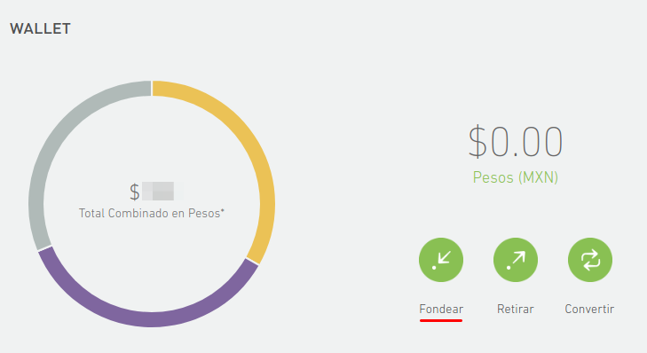
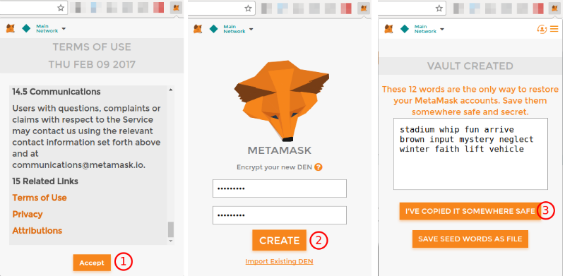
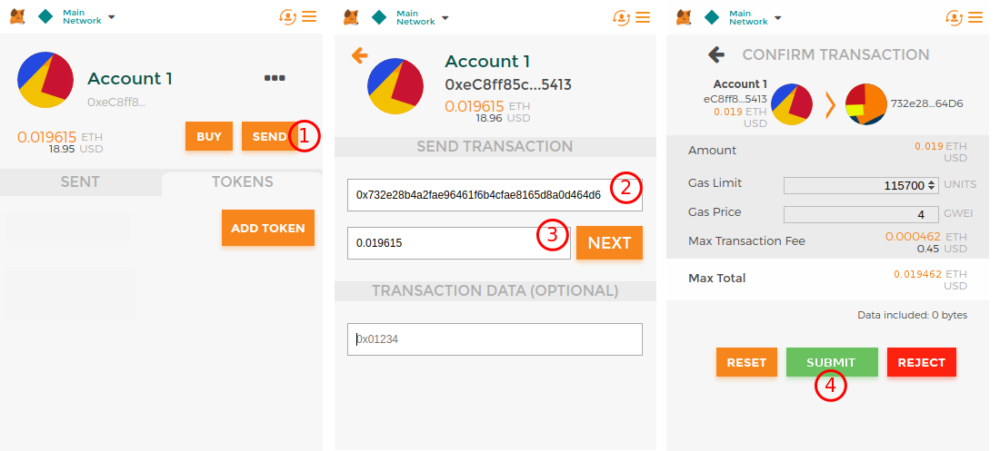
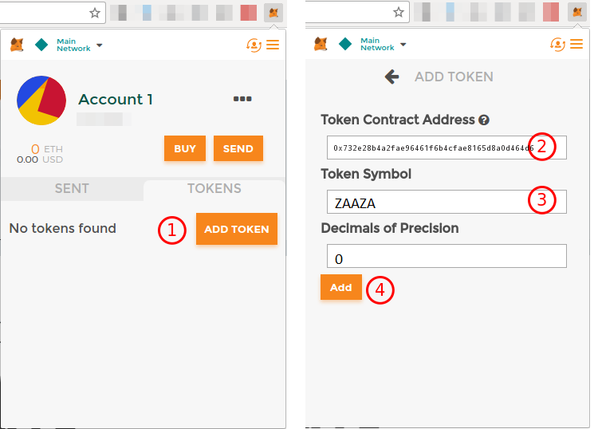

En esta guía te mostraremos el proceso para comprar FerrasCoin. Hemos desarrollado un contrato inteligente que al momento de recibir Ether asigna una cantidad de ZAZAZA a la dirección del participante. Para obtener FerrasCoin sigue al pie de la letra los siguientes pasos:
Si ya cuentas con ETH, sáltate al paso 2
Debes comprar Ether en el exchange de tu preferencia, por ejemplo Bitso.com o Crypto.com (en este tutorial usamos Bitso). Haz una cuenta y actívala siguendo sus instrucciones. Tras iniciar sesión verás una pantalla mostrando los balances de tu cuenta:
Tu balance en pesos (derecha) es $0, por lo que debes agregar fondos la cuenta haciendo click en "Fondear"
Bitso presenta varias formas de hacer un depósito como pago en 7-eleven o transferencia interbancaria. Selecciona la opción que más te convenga y sigue sus instrucciones.
Una vez realizado el depósito y pasado el tiempo de abono, podrás verlo reflejado en la página de saldos del monedero (wallet) mostrada anteriormente. Ahora toca hacer el intercambio de pesos por Ether.
Desde la barra de navegación haz click en "Trading".
Una vez ejecutada la orden de compra, podrás ver tu balance de Ether reflejado en la página de saldos. Ahora es tiempo de configurar el monedero de Metamask, a donde más adelante enviaremos el Ether.
Metamask es una extensión de Google Chrome que funciona como monedero flexible y permite la administración de monedas basadas en Ethereum, como lo es FerrasCoin. En el monedero de Metamask vamos a recibir ETH de Bitso y luego enviarlo al contrato inteligente. Es vital usar un monedero externo a Bitso para poder administrar las monedas ZAZAZA que se van a recibir.
Instala Metamask por medio del Chrome Web Store.
Una vez realizada la instalación, verás un ícono de un zorrito. Haz click sobre él para desplegar la interfaz gráfica.
Ahora solo tienes que copiar tu dirección de metamask.
¡Estamos listos para recibir ETH desde Bitso!
Vuelve a tu cuenta de Bitso para retirar el Ether.
En pocos minutos verás reflejada la transferencia en la interfaz de Metamask.
Finalmente estamos listos para interactuar con el contrato inteligente que le asignará monedas FerrasCoin (ZAZAZA) a tu dirección de Metamask.
Ahora que tu cuenta de Metamask tiene un saldo de Ethereum, es momento de enviarlos al contrato de ZAZAZA coin.
Un par de minutos después de hacer tu depósito verás el balance de ZAZAZA reflejado en Metamask. Pero primero debes agregar ZAZAZA a la lista:
